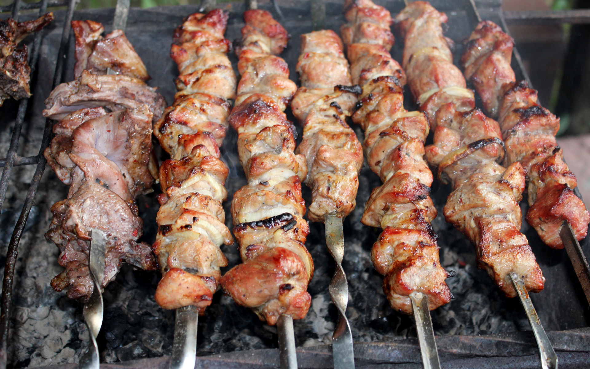

Return to home page
Barbecue

A dish that your mother will enjoy!
When we came back from our trip to Chile, what we most missed was this delicious and popular recipe we used to find everywhere there.
The first time we tried it back home, it was not as good as we remembered. With some adjustments given by our dear Chilean friends and
a few couple tries, we finally nailed that amazing flavor we're about to share with all of you.
Ingredients
-
4 pounds pork baby back ribs
-
salt and pepper to taste
-
2 cups ketchup
-
1 cup chili sauce
-
½ cup packed brown sugar
-
4 tablespoons vinegar
-
2 teaspoons dried oregano
-
2 teaspoons Worcestershire sauce
-
1 dash hot sauce
Steps
-
Preheat oven to 400 degrees F (200 degrees C).
-
Season ribs with salt and pepper. Place in a shallow baking pan. Brown in oven 15 minutes. Turn over, and brown another 15 minutes; drain fat.
-
In a medium bowl, mix together the ketchup, chili sauce, brown sugar, vinegar, oregano, Worcestershire sauce, hot sauce, and salt and pepper. Place ribs in slow cooker. Pour sauce over ribs, and turn to coat.
-
Cover, and cook on Low 6 to 8 hours, or until ribs are tender.